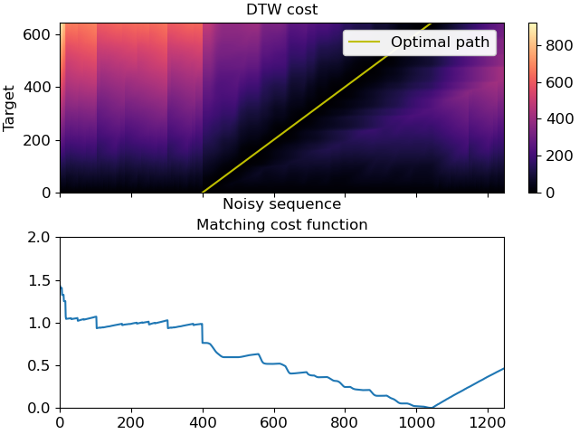

librosa.sequence.dtw¶
- librosa.sequence.dtw(X=None, Y=None, *, C=None, metric='euclidean', step_sizes_sigma=None, weights_add=None, weights_mul=None, subseq=False, backtrack=True, global_constraints=False, band_rad=0.25, return_steps=False)[source]¶
Dynamic time warping (DTW).
This function performs a DTW and path backtracking on two sequences. We follow the nomenclature and algorithmic approach as described in 1.
- 1
Meinard Mueller Fundamentals of Music Processing — Audio, Analysis, Algorithms, Applications Springer Verlag, ISBN: 978-3-319-21944-8, 2015.
- Parameters
- Xnp.ndarray [shape=(…, K, N)]
audio feature matrix (e.g., chroma features)
If
Xhas more than two dimensions (e.g., for multi-channel inputs), all leading dimensions are used when computing distance toY.- Ynp.ndarray [shape=(…, K, M)]
audio feature matrix (e.g., chroma features)
- Cnp.ndarray [shape=(N, M)]
Precomputed distance matrix. If supplied, X and Y must not be supplied and
metricwill be ignored.- metricstr
Identifier for the cost-function as documented in scipy.spatial.distance.cdist()
- step_sizes_sigmanp.ndarray [shape=[n, 2]]
Specifies allowed step sizes as used by the dtw.
- weights_addnp.ndarray [shape=[n, ]]
Additive weights to penalize certain step sizes.
- weights_mulnp.ndarray [shape=[n, ]]
Multiplicative weights to penalize certain step sizes.
- subseqbool
Enable subsequence DTW, e.g., for retrieval tasks.
- backtrackbool
Enable backtracking in accumulated cost matrix.
- global_constraintsbool
Applies global constraints to the cost matrix
C(Sakoe-Chiba band).- band_radfloat
The Sakoe-Chiba band radius (1/2 of the width) will be
int(radius*min(C.shape)).- return_stepsbool
If true, the function returns
steps, the step matrix, containing the indices of the used steps from the cost accumulation step.
- Returns
- Dnp.ndarray [shape=(N, M)]
accumulated cost matrix. D[N, M] is the total alignment cost. When doing subsequence DTW, D[N,:] indicates a matching function.
- wpnp.ndarray [shape=(N, 2)]
Warping path with index pairs. Each row of the array contains an index pair (n, m). Only returned when
backtrackis True.- stepsnp.ndarray [shape=(N, M)]
Step matrix, containing the indices of the used steps from the cost accumulation step. Only returned when
return_stepsis True.
- Raises
- ParameterError
If you are doing diagonal matching and Y is shorter than X or if an incompatible combination of X, Y, and C are supplied.
If your input dimensions are incompatible.
If the cost matrix has NaN values.
Examples
>>> import numpy as np >>> import matplotlib.pyplot as plt >>> y, sr = librosa.load(librosa.ex('brahms'), offset=10, duration=15) >>> X = librosa.feature.chroma_cens(y=y, sr=sr) >>> noise = np.random.rand(X.shape[0], 200) >>> Y = np.concatenate((noise, noise, X, noise), axis=1) >>> D, wp = librosa.sequence.dtw(X, Y, subseq=True) >>> fig, ax = plt.subplots(nrows=2, sharex=True) >>> img = librosa.display.specshow(D, x_axis='frames', y_axis='frames', ... ax=ax[0]) >>> ax[0].set(title='DTW cost', xlabel='Noisy sequence', ylabel='Target') >>> ax[0].plot(wp[:, 1], wp[:, 0], label='Optimal path', color='y') >>> ax[0].legend() >>> fig.colorbar(img, ax=ax[0]) >>> ax[1].plot(D[-1, :] / wp.shape[0]) >>> ax[1].set(xlim=[0, Y.shape[1]], ylim=[0, 2], ... title='Matching cost function')
